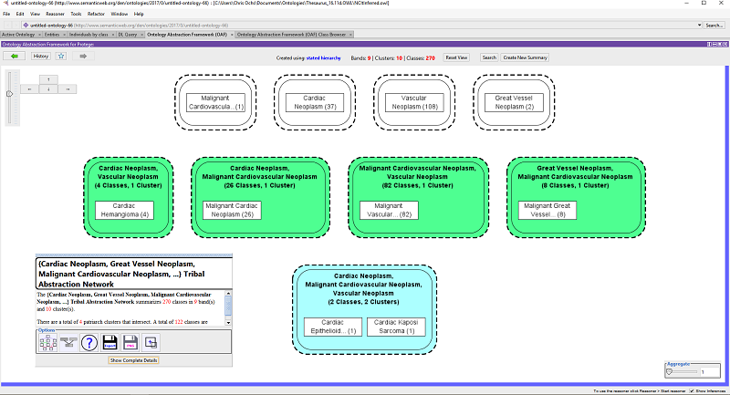
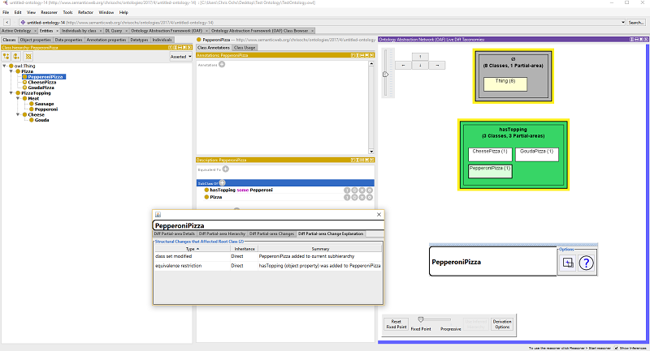
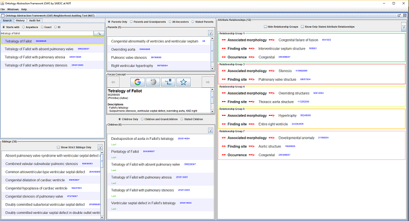
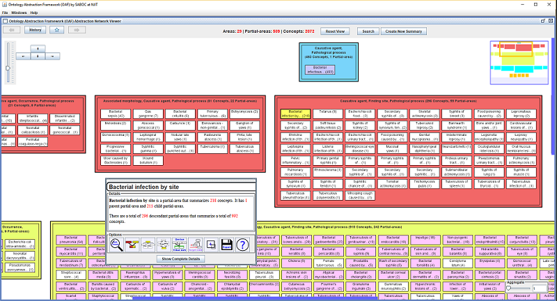

About the Ontology Abstraction Framework (OAF)
- What is an Abstraction Network?
- Features of the OAF
- Comparison of OAF Versions
- Installing and Running the OAF
1. What is an Abstraction Network?
An abstraction network is an algorithmically-derived summary of an ontology's structure and content. We have developed, and the OAF supports, several kinds of abstraction networks (described below), each of which summarizes a different aspects of an ontology's structure. In general, sets of "similar" concepts, for a defined metric of sturctural similarity, are grouped together into a "node." Nodes are organized into a hierarchy based on the underlying hierarchical relationships of the ontology.
Excerpt of an abstraction network in the OAF for the NCIt Neoplasm subhierarchy
1.1. Types of Abstraction Networks Supported by the OAF
The OAF supports the following kinds of abstraction networks:- Partial-area Taxonomies: Summarize subhierarchies of concepts that are modeled with the same types of defining relationships (e.g., properties in OWL, relationships in OBO, and attribute relationships in SNOMED CT). Concepts are separated into disjoint sets called areas, which contain of concepts with the exact same set of defining relationships. Areas are separated into partial-areas, which summarize subhierarchies of semantically similar concepts in each area.
- Disjoint Partial-area Taxonomies: When an ontology allows concepts to have multiple parents a given concept may be summarized by multiple partial-areas, according to which subhierarchies it belongs to. A disjoint partial-area taxonomy separates concepts into disjoint sets called disjoint partial-areas, which visually identify points of intersection between partial-areas.
- Tribal Abstraction Network (TAN): Summarize the intersections between user-selected subhierarchies in an ontology. Concepts are partitioned into disjoint sets called bands, which identify the subhierarchy/subhierarchies a set of concepts belongs to. Bands are partitioned into clusters, which identify subhierarchies of concepts that exist at a specific point of intersection between two or more subhierarchies.
- Disjoint Tribal Abstraction Networks: As with partial-areas, a given concept may be summarized by multiple clusters. A Disjoint TAN separates concepts into disjoint units called disjoint clusters, which summarize the points of intersection between clusters in a band.
- Target Abstraction Network (Target AbN): Also called Range AbN (when applied to OWL/OBO ontologies) or Ingredient AbN (when applied to NDF-RT). Summarizes subhierarchies of concepts that serve as targets for defining relationships, along with the source concepts that have relationships pointing to the target concepts.

A Tribal Abstraction Network (TAN) created from a NCIt subhierarchy in the OAF Protege Plugin
A Tribal Abstraction Network (TAN) created from a NCIt subhierarchy in the OAF Protege Plugin
1.2. Live Abstraction Networks
A Live Abstraction Network is an abstraction network that updates as an ontology is edited. The Protege Plugin version of the OAF includes in-development functionality for live abstraction networks. As you edit your ontology, the summary provided by the abstraction network will accurately reflect the current state of your ontology. We have tested live abstraction network functionality with each of the above abstraction network types.Live abstraction networks in the OAF Protege Plugin also include the ability to switch back and forth between abstraction networks created from the asserted relationships of an ontology and the inferred relationships of an ontology.
1.3. Diff Abstraction Networks
A Diff Abstraction Network is an abstraction network that summarizes changes to an ontology's structure. The OAF framework includes programmatic functionality for creating diff abstraction networks for any kind of abstraction network. However, the current user-facing version of the OAF only includes a user interface for Diff Partial-area Taxonomies, which summarize changes to subhierarchies of structurally and semantically similar concepts. Diff partial-area taxonomies can be derived in the standalone versions of the OAF for OWL/OBO and SNOMED CT. Additional diff partial-area taxonomy is available in specific OAF versions.1.3.1. Live Diff Partial-area Taxonomies
The OAF Protege Plugin includes initial support for Live Diff Partial-area Taxonomies, which summarize changes to your ontology as you are editing it. Live diff partial-area taxonomies can be derived from a fixed version of the ontology or progressively as each edit is applied. Additionally, live diff partial-area taxonomies can be derived using asserted relationships or inferred relationships, and changes can be tracked across both.

Live Diff Partial-area Taxonomy view in the OAF Protege Plugin
Live Diff Partial-area Taxonomy view in the OAF Protege Plugin
1.3.2. Visual Semantic Delta
The OAF for SNOMED CT includes support for Visual Semantic Deltas, which provide concept-level change information.2. Ontology Abstraction Framework (OAF) Features
All versions of the OAF include two main components: a system for creating, visualizing, and exploring various kinds of abstraction networks and a text-diagram hybrid concept browser.2.1. Abstraction Networks in the OAF
Every version of the OAF can derive all of the abstraction networks described above. Each abstraction network can be created for an arbitrary subhierarchy of concepts, as long as the subhierarchy has an appropriate structure. Additionally, the OAF includes various processes for creating/extracting subsets of abstraction networks. A process of aggregation can also be applied to hide nodes that summarize relative few concepts. Each version of the OAF includes also includes custom functionality, described below.2.2. OAF Concept Browser
Every version of the OAF includes a concept browser based on our previously developed Neighborhood Auditing Tool (NAT) for the Unified Medical Lanauge System (UMLS). This browser provides a text-diagram hybrid view of an ontology. The OAF Concept Browser was designed to facilitate the auditing of ontology content by domain experts. The OAF Concept Browser includes functionality for marking perceived errors in an ontology. To access this functionality, create or open an "Audit Set." When an audit set is loaded errors can be reported by right clicking on a concept or relationship.

Tetralogy of Fallot displayed in OAF Concept Browser for SNOMED CT
Tetralogy of Fallot displayed in OAF Concept Browser for SNOMED CT
3. Comparison of OAF Versions
| OAF Protege Plugin | OAF for OWL/OBO | OAF for SNOMED CT |
|
|
|

The Bacterial Infectious Disease partial-area taxonomy in the OAF for SNOMED CT
The Bacterial Infectious Disease partial-area taxonomy in the OAF for SNOMED CT
4. Installing and Running the OAF
4.1. OAF Protege Plugin
The OAF Protege Plugin requires Protege 5.2 or newer (desktop version). The newest version of Protege can be downloaded at the Protege website.
- Download OAF Protege Plugin (oaf-protege-1.0.1.jar)
- Locate the local directory Protege was installed in
- Place the oaf-protege.jar file in Protege's plugins folder
- Start Protege
- Open an ontology
- To view the OAF Abstraction Network tool click on: "Window -> Tabs -> Ontology Abstraction Network (OAF)"
- To view the OAF Class Browser click on: "Window -> Tabs -> Ontology Abstraction Network (OAF) Class Browser"
- To include a Live Diff Partial-area Taxonomy view click on: "Windows -> Views -> Ontology Views -> Ontology Abstraction Framework (OAF) Live Diff Taxonomies".
It is recommended that you include the Live Diff Partial-area Taxonomy view in Protege's Entities tab.
- The default Java Heap space specified for Protege may be too small when large ontologies/large abstraction networks are displayed. To increase this size in Windows, right click on "run.bat" in Protege's installation directory and open the file in a text editor. Change -Xmx500M to -Xmx2G.
- The OAF Abstraction Network tool and OAF Class Browser will use the asserted hierarachical relationships of an ontology until a reasoner is applied. When a reasoner is running the inferred hierarchical relationships will be used.
4.2. OAF for OWL/OBO
The OAF for OWL/OBO requires Java 8 or better, available here: Download Java.- Download OAF for OWL/OBO (oaf-owl-1.0.1.zip)
- Extract the contents of oaf-owl.zip to an easy-to-find directory. The Desktop is recommended.
- Navigate to where you exacted the contents of oaf-owl.zip
- If you are using Windows, double click on "run oaf.bat" to launch the complete OAF and "run class browser" to run only the OAF Class Browser. If you are not using Windows, double click on oaf-owl.jar.
- Click on Open an Ontology (.owl/.obo) and select an appropriate ontology file. The ontology will be loaded into the OAF.
- The OAF for OWL/OBO uses the asserted relationships of an ontology. There is currently no support for reasoning in the standalone OAF for OWL/OBO, though it is planned as a future feature.
4.3. OAF for SNOMED CT
The OAF for SNOMED CT requires Java 8 or better, available here: Download Java.- Download OAF for SNOMED CT (oaf-snomed-1.0.1.zip)
- Extract the contents of oaf-snomed.zip to an easy-to-find directory. The Desktop is recommended.
- Navigate to where you exacted the contents of oaf-snomed.zip
- If you are using Windows, double click on "run oaf.bat" to launch the complete OAF for SNOMED CT and "run concept browser" to run only the OAF Concept Browser. If you are not using Windows, double click on oaf-snomed.jar.
- Click on "Select Folder Containing SNOMED CT Release(s) and select a folder that contains one or more International SNOMED CT releases
- The releases will be listed in the drop down box to the right of the button. Select a release and then click "Load".
- Currently the OAF for SNOMED CT supports the International Release of SNOMED CT. It can be in RF1 or RF2 format. Support for country-specific releases is planned (though it may currently work with some US Extension releases).
- The OAF for SNOMED CT requires that SNOMED CT release files are in the appropriate directory. For example, the July 2016 international release should be located in a folder named "SnomedCT_RF2Release_INT_20160731" (the same folder that is included in the International Release download from the NLM UTS: https://www.nlm.nih.gov/healthit/snomedct/international.html